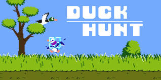
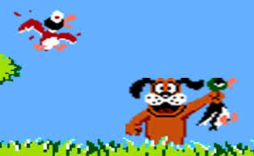
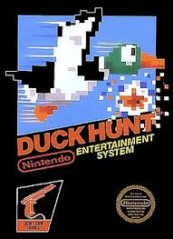

Sobre o jogo
Sem teto e sem esperança, um portal misterioso abriu diante dele. Do outro lado? Uma diemsão tomada por adolescentes que odeiam pombos.
Imagens do jogo



Como jogar
Use as setas do teclado para se mover como o personagem e o WASD como o pombo.
Use o botão do mouse para atirar pedras como o personagem e o espaço para defecar como o pombo.
Equipe
- Victor Barbosa Viana
- Thiago Zanin Tozzi
Log de desenvolvimento
- Dia 1: Base do jogo
- Dia 2: HUD e mecânicas
Instruções para executar
- Baixe o arquivo zip
- Tenha python e pygame instalados